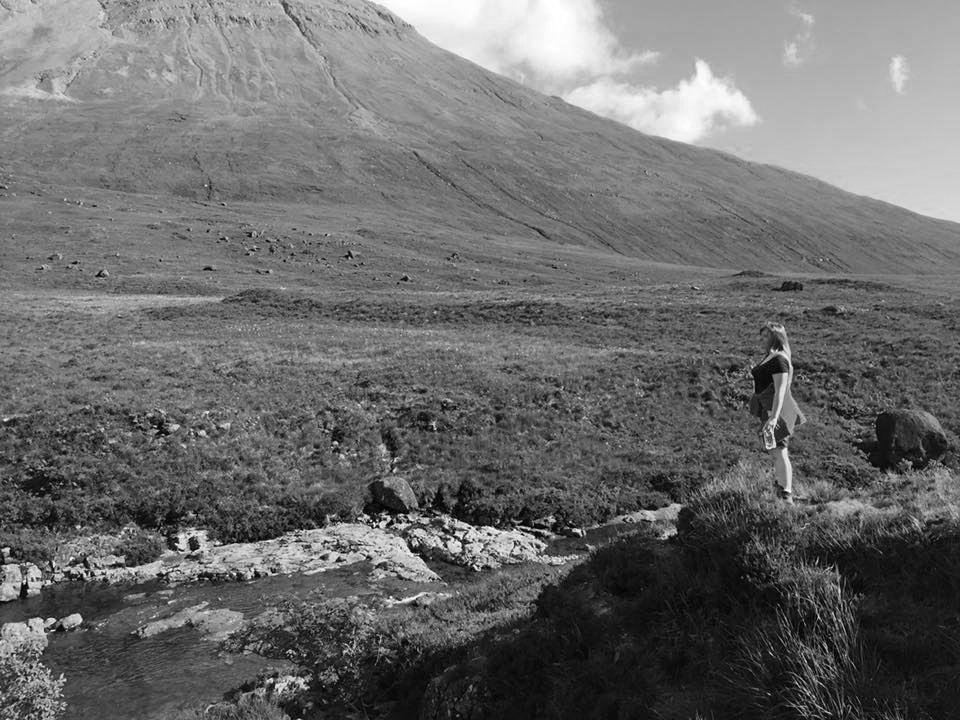

Halò agus fàilte gu an làrach-lìn agam!
Bha gaol agam air reul-eòlas on a bha mi àirde glùn mo mhàthar, so an-diugh bidh mi a' seall air dealbhan beag na cruinne. Air mhodh eile, 's toil leam nàdar, pailleon-eòlas agus ficsean saidheansail ('s e sin adhbhar 's Jurassic Park mo roghainn film!).
Tha cànanan, coding agus dèanamh dealbhan a còrdadh rium cuideachd agus rinn mi an an làrach-lìn seo a chionn. Bruidhinn rium air, ma bu toil leibh.
O, agus aon uair bha mi ann an cuanal meatailt throm agus rinn mi fèis chiùil.